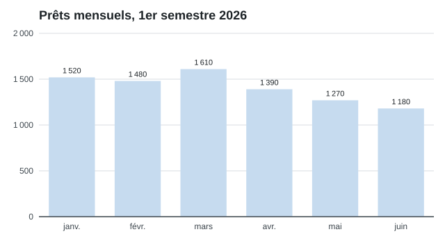

Statistiques de prêt
Les prêts reculent légèrement au printemps, comme chaque année.

Horaires du guichet
Du lundi au vendredi, de 8 h 30 à 11 h 30 et de 14 h à 17 h ; le jeudi sans interruption jusqu'à 18 h 30. La veille des jours fériés, fermeture à 16 h.
Autres actualités
Accessibilité
Nous améliorons constamment l'accessibilité de ce site. Vos remarques sont les bienvenues à l'adresse web@bibliotheque-communale-de-valfictif.example.